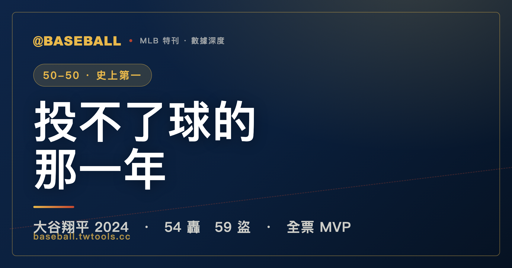

投不了球的那一年：大谷翔平 2024，與棒球史上第一個 50-50
2024 年的大谷翔平做了一件矛盾的事：整季沒投一顆球（手肘術後復健），卻打出生涯最強的打擊成績單，並締造大聯盟史上首見的單季 50 轟 50 盜。9 月 19 日對馬林魚，他用一場 6 支 6、3 響砲、2 盜、10 打點完成 50-50；年底全票拿下國聯 MVP，同時奪下加盟道奇後的第一座世界大賽冠軍。這篇特刊用七張資料表，從那一夜講到他帶傷打完的十月——數字怎麼來、含金量在哪、代價是什麼，一次講清楚。

MLB 特刊｜大谷翔平 2024 賽季
有一種球員，你以為已經看遍他的極限了，他卻在「少做一半」的情況下，打出生涯最強的一年。
2024 年的大谷翔平（Shohei Ohtani）就是這樣。這一年他一球都沒投——2023 年 9 月動了右手肘的韌帶手術，整個 2024 賽季他只是洛杉磯道奇（Los Angeles Dodgers）的一名指定打擊（DH），那個讓全世界著迷的「投打二刀流」暫時收了起來。理論上，這應該是被打了折扣的大谷。
結果，這個「半個大谷」打出了大聯盟史上沒有人做到過的事，還順手拿了一座冠軍。
但這篇特刊不打算只複誦那些漂亮的標題。對棒球迷——尤其是看數字的人——來說，2024 年的大谷有兩個容易被星光蓋過的真相：第一，他締造歷史的 50 轟 50 盜，在這兩個項目裡，他其實全大聯盟都只排第二；第二，那座世界大賽冠軍，他是帶傷打完的，而且打得並不好。把這兩件事跟里程碑放在一起講，才是這一季的全貌。所以我們分五段、用七張表，慢慢拆。
一、50-50 的那一夜：6 支 6、3 響砲、10 打點
先講那場讓他寫進史冊的比賽。
2024 年 9 月 19 日，道奇作客邁阿密對馬林魚（Miami Marlins）。賽前，大谷的數字停在 48 轟、49 盜——距離那個從來沒有人碰過的門檻，只差臨門幾步。然後他在這一場，把所有人都嚇了一跳：6 個打數敲出 6 支安打、轟出 3 支全壘打、外加 2 次盜壘、進帳 10 分打點。 他在這場比賽的第一個打席就盜下第 50 個壘包，接著用接連的長打把全壘打數從 48 一路推到 51——當第 50 轟落地的那一刻，他成為大聯盟史上第一個單季同時達成 50 轟與 50 盜的球員。
這一夜，道奇把比賽打成一場徹底的一面倒。看看雙方的比分結構（R＝得分、H＝安打、E＝失誤）：
| 9/19 @ 邁阿密 | R 得分 | H 安打 | E 失誤 |
|---|---|---|---|
| 洛杉磯道奇 | 20 | 16 | 1 |
| 邁阿密馬林魚 | 4 | 9 | 0 |
道奇全場狂掃 20 分、16 支安打，而這 20 分裡，大谷一個人就用 3 發全壘打扛進 10 分打點——換句話說，這支球隊半數的打點，是大谷一個人包辦的。
而最戲劇性的是那個達成的順序。大谷帶著 48 轟、49 盜走進這場比賽，距離 50-50 各差一步。他在第一個打席就先把第 50 個壘包盜了下來——盜壘那一格先填滿；接著用一發、又一發、再一發全壘打，把長打那一格從 48 推過 50。也就是說，他不是「先湊到一項、再慢慢等另一項」，而是在同一場比賽裡，把缺的兩塊拼圖，幾乎在幾個打席之內一次補齊。要是有人想為「50-50 該怎麼達成」寫一個最誇張的劇本，大概也不會比這場更狂。
這裡要把話說清楚，因為它正是這個夜晚最該被講準的地方：這是一場貨真價實的爆發。 一場 6 支 6 的完美打擊日、3 支全壘打是他的生涯單場新高，而且這 3 轟是在真正計入勝負的大聯盟例行賽裡打出來的。50-50 不是靠賽季尾聲刷垃圾數據湊出來的里程碑，而是用一場棒球史上數一數二的個人單場表演，一次解決的。有些紀錄是「熬」到的，這一個是「打」出來的——對看門道的球迷來說，這個區別很重要。
二、整季成績單：生涯最強，但 50-50 兩項都只是「全聯盟第二」
把整季數字攤開，2024 年的大谷在打擊端幾乎沒有死角。這是他完整的打擊成績單：
| 大谷 2024 打擊 | 數字 | 大谷 2024 打擊 | 數字 |
|---|---|---|---|
| 出賽 G | 159 | 打點 RBI | 130 |
| 打席 PA | 731 | 四壞 BB | 81 |
| 打數 AB | 636 | 三振 SO | 162 |
| 安打 H | 197 | 盜壘 SB | 59 |
| 二壘打 2B | 38 | 打擊率 AVG | .310 |
| 三壘打 3B | 7 | 上壘率 OBP | .390 |
| 全壘打 HR | 54 | 長打率 SLG | .646 |
| 得分 R | 134 | OPS | 1.036 |
| 壘打數 TB | 411 |
幾個重點，按它真正的份量排：
- 這是大谷生涯第一個 50 轟賽季，而且一次就跳到 54 轟。 在此之前他的單季最高是 46 轟（2021、2023）。2024 年他的打擊三圍 .310／.390／.646 全是生涯新高，411 個壘打數更是怪物等級的長打產出。
- 他幾乎包辦了國家聯盟（NL）打擊端的主要排行榜：全壘打、打點、得分、OPS、壘打數，五項聯盟第一。這不是某一項特別突出，而是全面性的壓制。
但這裡有一個非常多人講錯、也非常值得講準的地方——在 50-50 的兩個項目上，把全大聯盟（含美聯）一起算，大谷其實兩項都只排第二。
先看全壘打。2024 年全大聯盟的全壘打王，是同年拿下美聯 MVP 的亞倫・賈吉（Aaron Judge）：
| 2024 MLB 全壘打榜 | 球員 | 球隊 | HR |
|---|---|---|---|
| 1 | 亞倫・賈吉 Aaron Judge | 紐約洋基 | 58 |
| 2 | 大谷翔平 Shohei Ohtani | 洛杉磯道奇 | 54 |
| 3 | 安東尼・桑坦德 A. Santander | 巴爾的摩金鶯 | 44 |
| 4 | 胡安・索托 Juan Soto | 紐約洋基 | 41 |
| 5 | 馬塞爾・歐祖納 Marcell Ozuna | 亞特蘭大勇士 | 39 |
再看盜壘。2024 年全大聯盟的盜壘王，是辛辛那提紅人的新生代天才小精靈艾利・德拉克魯茲（Elly De La Cruz）：
| 2024 MLB 盜壘榜 | 球員 | 球隊 | SB |
|---|---|---|---|
| 1 | 艾利・德拉克魯茲 E. De La Cruz | 辛辛那提紅人 | 67 |
| 2 | 大谷翔平 Shohei Ohtani | 洛杉磯道奇 | 59 |
| 3 | 布萊斯・圖朗 Brice Turang | 密爾瓦基釀酒人 | 50 |
| 4 | 荷西・卡巴耶羅 José Caballero | 坦帕灣光芒 | 44 |
| 5 | 荷西・拉米瑞茲 José Ramírez | 克里夫蘭守護者 | 41 |
所以誠實地說：論單項，大谷既不是 2024 年的全壘打王，也不是盜壘王，兩項都輸給了一個專精的人。 賈吉的 58 轟比他多 4 發、德拉克魯茲的 67 盜比他多 8 個。
那為什麼 50-50 還是這麼可怕？這條線有多難走，用一個對照會看得更清楚。2024 年的美聯 MVP 賈吉，那一季打出的是一份比大谷更兇猛的「純打擊」成績單：
| 2024 兩聯盟 MVP | 大谷翔平（NL） | 亞倫・賈吉（AL） |
|---|---|---|
| 打擊率 AVG | .310 | .322 |
| 全壘打 HR | 54 | 58 |
| 打點 RBI | 130 | 144 |
| OPS | 1.036 | 1.159 |
| 盜壘 SB | 59 | 10 |
看出來了嗎？論純粹的打擊——打擊率、全壘打、打點、OPS——賈吉 2024 年其實樣樣都贏過大谷。 如果只比傳統打擊與 OPS 這些純打擊指標，那一年的答案，數據上是賈吉。
那大谷憑什麼也是 MVP、憑什麼這一季被稱為歷史級？答案就在最後那一行：盜壘 59 比 10。 賈吉是一台純粹的長打機器，但他幾乎不跑；大谷則在打出接近賈吉等級的火力的同時，還附帶了一整個賽季的頂級速度。這就是 50-50 真正的稀有性——它要的不是「最強的打者」，而是「沒有人能同時擁有的兩種身體」。
為什麼這麼難？因為長打與速度，在棒球的身體條件上幾乎是互斥的。能把球扛出牆的，通常是壯碩、為拉打發力而生的身材；能跑出 50 盜的，通常是精瘦、為加速而生的體型。一個人要同時具備這兩者，本身就違反直覺——這也是為什麼，在大谷之前，連門檻低一截的「40 轟 40 盜」，史上都只有極少數幾個人達成過。大谷做的，是把這個本來就罕見的成就，又往上推了一整個級距，推到一個過去被認為幾乎不可能的位置。換句話說，他不是靠在某一條排行榜上贏過所有人，而是靠站在兩條排行榜的高處，把它們連成了一條沒人走過的線。
三、「只打擊」這件事，比 50-50 更該被記住
50-50 已經夠驚人了，但 2024 年的大谷還有一個前提，常常被興奮的數字蓋過去：他這一年完全沒有投球。
過去大谷之所以被稱為「百年一遇」，核心不在於他能打全壘打，而在於他能「一個人同時當強打與先發投手」這件違反現代棒球分工常識的事。一個球員，今天先發主投六、七局，隔天當第三棒打擊——這在 1920 年代貝比・魯斯（Babe Ruth）之後，幾乎沒有人能持續做到。那才是大谷的真正稀有性。
而 2024 年，因為 2023 年 9 月動了手肘韌帶的手術、需要整季復健，大谷把投手的那一半收了起來，整季只擔任指定打擊。也就是說——這份史上級的打擊成績單、這個 50-50，是他在「只用一半武器」的狀態下交出來的。
這帶出 2024 年 MVP 的另一個歷史意義：大谷成為大聯盟史上第一位、以「指定打擊」為主要守備位置奪得 MVP 的球員。在他之前，MVP 幾乎都頒給了同時能守備的球員——一個基本上只負責打擊、不上場守備的球員能拿 MVP，這件事本身就打破了一個百年來的潛規則。
在大谷之前，棒球界對 MVP 有一種隱形的偏見：再會打，只要你不守備、不替球隊承擔場上的防守責任，這個「最有價值」的頭銜就很難真的落到你頭上。歷史上不是沒有打擊華麗的指定打擊，但他們幾乎都在 MVP 票選裡吃過這個暗虧。大谷 2024 年用一個沒人能反駁的賽季，把這道門檻整個撞開。這不是「DH 也能拿 MVP」那麼簡單，而是 MVP 投票第一次正式承認：當一名純打者的攻擊與跑壘價值高到這個程度，不守備也不再足以構成否定他的理由。從這個角度看，他拿的不只是一座個人獎，更像是替「純打者的價值」重新定了價。而他做到這件事的同一年，投球的那一半還是缺席的。
所以這一季的大谷，要誠實地分成兩面看：打擊端，這是近代最具統治力的一季；二刀流的那一面，則因傷整季缺席。把這兩件事混為一談、說成「大谷又打又投還 50-50」，就講錯了。真正的故事是：他只用了一半的自己，就改寫了打擊的歷史。
這也讓 2024 年成為大谷生涯裡一個奇特的「過渡之年」：手肘在復健、投球暫停，他把原本要分給投球的精力，全部灌進了打擊——結果反而打出生涯最強的一季。某種程度上，這一年回答了一個一直存在的疑問：當大谷不必再分心於登板，他的打擊上限能衝到多高？2024 年給的數字是 54 轟、50-50、全票 MVP。而依照當時球團的規劃，投球的那一半預計在 2025 年歸隊。也就是說，2024 年這份成績單，是「只有打者大谷」的版本——真正完整的那個他，理論上還在後面。這對任何投手聯盟來說，都不會是一個讓人安心的訊號。
四、道奇的十月：98 勝、一路打進世界大賽，與一個半脫位的肩膀
個人數據之外，2024 年對大谷還有另一層意義：這是他職業生涯第一次真正打進季後賽。在天使（Angels）的六年，他從未嚐過十月的棒球；轉投道奇的第一年，他就一路走到了最後。
道奇這一年例行賽繳出 98 勝 64 敗，拿下國聯西區冠軍、也是全大聯盟最佳戰績。把他們的戰績拆成主、客場來看，會發現這是一支主場特別兇悍的球隊：
| 道奇 2024 例行賽 | 勝 | 敗 | 勝率 |
|---|---|---|---|
| 主場 | 52 | 29 | .642 |
| 客場 | 46 | 35 | .568 |
| 全季 | 98 | 64 | .605 |
這對大谷個人，是一個遲來的轉折。在天使的六年，他打出過 MVP 等級的賽季，球隊卻年年與季後賽無緣——他的巔峰，幾乎都浪費在沒有十月的球季裡。2024 年轉投一支「為了贏球而打造」的道奇，意義正在於此：他終於把生涯最強的一季，放進了一支真的能走到最後的球隊。對一個 30 歲、職業生涯前段都在敗隊裡單打獨鬥的球員來說，這個十月是他等了很久的舞台。
進入季後賽後，他們的奪冠之路是這樣走完的：
| 輪次 | 對手 | 系列賽結果 |
|---|---|---|
| 國聯分區賽 NLDS | 聖地牙哥教士 Padres | 道奇晉級（3-2） |
| 國聯冠軍賽 NLCS | 紐約大都會 Mets | 道奇晉級（4-2） |
| 世界大賽 WS | 紐約洋基 Yankees | 道奇奪冠（4-1） |
世界大賽對上洋基，是兩支大市場、長年宿敵球隊的世紀對決。道奇前三戰連下三城，第四戰被洋基拉回一城，第五戰在洋基主場驚險收尾——這是那場封王戰的比分：
| WS G5｜10/30 @ 紐約 | R 得分 | H 安打 | E 失誤 |
|---|---|---|---|
| 洛杉磯道奇 | 7 | 7 | 0 |
| 紐約洋基 | 6 | 8 | 2 |
道奇以 7-6 拿下第五戰、4 比 1 收下系列賽，捧起隊史第八座世界大賽冠軍。注意洋基那欄的 2 次失誤——這是一場洋基守備與防守細節崩盤、道奇把握住每一次縫隙的比賽；封王戰的差距，最後不是火力，而是誰先犯下不可回收的錯。對一支例行賽就坐擁全大聯盟最佳戰績、季後賽又一路高歌的球隊來說，這座冠軍贏得理所當然。而這，也是大谷翔平職業生涯的第一冠。
但這座冠軍，得加上一個誠實的註腳——而且這正是這段故事最容易被星光蓋過的部分：
大谷其實是帶著傷打完世界大賽的。 第二戰，他在一次試圖盜壘、滑進二壘的過程中，左肩（非慣用、非投球手那側）發生了半脫位（subluxation）。他咬牙撐著打完了後面三場，但賽後進一步檢查確診為唇盂撕裂（torn labrum），並在 11 月 5 日接受了手術。受傷之後，他在世界大賽的打擊幾乎啞火——傷後的 11 個打數只敲出 1 支安打。
換句話說，道奇是在當家打者半殘的情況下，靠著整體陣容的厚度完成封王。對大谷個人而言，這個十月同時裝著兩件事：「達成生涯第一冠」與「在最高舞台上帶傷、打擊低迷」。把冠軍寫成大谷一個人的封王秀，並不符合事實；但反過來說，一個肩膀半脫位還堅持站在打擊區裡的球員，本身也是這座冠軍的一部分。兩面都講，才完整。
五、全票 MVP、7 億合約，與一個被低估的真相
賽季結束後，榮譽如預期而來。
大谷以全票之姿（30 張第一名選票全收）拿下 2024 年國聯最有價值球員（NL MVP）。 這是他生涯第三座 MVP，也是他第一次在國家聯盟拿下這個獎項（前兩座 2021、2023 都在美聯、效力天使時期）。更具歷史意義的是前面提過的那一點：他是大聯盟史上第一位以指定打擊為主要位置奪得 MVP 的球員。同年他也拿下國聯銀棒獎與漢克阿倫獎（Hank Aaron Award，象徵聯盟年度最佳打者）。值得一提的是，同一年的美聯 MVP，正是那位用 58 轟壓過他的賈吉——2024 年的兩聯盟 MVP，等於是這兩個人的對照。
把時間軸拉開，2024 年這座 MVP 在大谷生涯裡又多了一層份量。這是他的第三座 MVP，而且三座全是「全票通過」：
| 大谷的 MVP | 年份 | 聯盟 | 結果 |
|---|---|---|---|
| 第一座 | 2021 | 美聯 AL | 全票 |
| 第二座 | 2023 | 美聯 AL | 全票 |
| 第三座 | 2024 | 國聯 NL | 全票 |
連續在兩個不同聯盟都拿下 MVP，這件事在大聯盟超過百年的歷史裡，過去只有一個人做到過——傳奇巨星法蘭克・羅賓森（Frank Robinson）。大谷在 2024 年成為史上第二人。而且不同於羅賓森，大谷這三座全是毫無異議的全票——這代表在他奪獎的每一年，沒有任何一張選票認為，場上有別人比他更有價值。一個球員能在生涯中累積三座 MVP 已是頂級，三座全部全票、還橫跨兩個聯盟，這在現代棒球裡幾乎是孤例。
至於那紙合約：大谷在 2023 年底以 10 年 7 億美元加盟道奇，創下當時職業運動史上的金額紀錄。但這紙合約真正特別的，是它的結構——其中 6.8 億美元是遞延支付：2024 到 2033 這十年，他每年實領的薪資只有 200 萬美元，剩下的 6.8 億要到 2034 至 2043 年才分期支付。這個遞延是大谷自己提出的，目的是讓道奇在當下空出更多薪資空間去補強陣容。事後看，這支補強到位、最終奪冠的道奇，與這份「我先少領、讓球隊去買人」的合約結構，很難說沒有關係。對一個剛拿下史上最大約的球員來說，這是一個耐人尋味的決定：他把一部分個人收入，換成了贏球的機率。
這紙合約在 2023 年底簽下時，是當時公開報導中全世界職業運動史上總額最大的一筆，超越了過去所有棒球、籃球、足球明星的紀錄；之後才被胡安・索托（Juan Soto）與大都會的 15 年 7.65 億美元合約超越。但它最被反覆討論的，從來不只是那個 7 億的數字，而是那個「為了贏球，我願意現在少領」的選擇本身。在一個球員追求極大化個人合約幾乎天經地義的時代，大谷反其道而行——這種把競爭力擺在帳面數字前面的姿態，某種程度上，比 50-50 更難被別人複製。
最後，講一個容易被「50-50」「全票 MVP」這些標題蓋過的真相：
2024 年，是大谷被打了折扣的一年。 他沒有投球，季後賽還帶著一個半脫位的肩膀、打擊低迷地打完。單看 50 轟、50 盜，他在全大聯盟也都不是該項目的第一名。然而即便如此，他依然締造了史上第一個 50-50、依然全票拿下 MVP、依然在加盟第一年就拿了冠軍。
這句話反過來說，會更有重量——當這個人健康、當投打二刀流完整運轉、當他在某一條排行榜上不必屈居第二時，他的上限到底在哪裡？ 2024 年給的，與其說是一個答案，不如說是一道更大的問句。而對 2025 年以後才開始認真看大聯盟的台灣球迷來說，這一季或許正是認識大谷翔平最好的起點：不是因為它完美，而是因為它把這個球員的「驚人」與「未完成」，同時擺在了同一張成績單上。
而這，或許正是大谷翔平最值得細看的地方。在這個很容易把他神格化的時代——每一支全壘打都被說成「又一個歷史」、每一個數字都被冠上「百年一遇」——2024 年的成績單其實提供了一個更誠實、也更有意思的版本：他是史上第一個 50-50 的人，但這兩項他在全大聯盟都只排第二；他全票拿下 MVP，但同一年有個叫賈吉的人，純打擊樣樣比他強；他奪下生涯第一冠，卻是拖著一個半脫位的肩膀、在打擊低迷中走完最後那幾場。
把這些「但是」放回去，大谷並沒有因此變得比較不偉大——恰恰相反。一個身上同時揹著「史上第一」與「項目第二」、「全票 MVP」與「帶傷低迷」的球員，比一個被擦得發亮、毫無瑕疵的神話，要真實得多，也耐看得多。2024 年的大谷翔平，不是一則已經寫完的傳奇，而是一個還在進行中的、充滿矛盾與餘地的故事。對真正喜歡看數字、看門道的球迷來說，這樣的故事，才剛開始好看而已。
本文棒球場上的個人數據（打擊三圍、全壘打、盜壘、排行榜、獎項、合約）引自大聯盟官方資料（MLB StatsAPI／MLB.com）；道奇例行賽戰績與主客場拆分引自 MLB 官方積分榜；各場比分與逐局 line score（含 9/19 達成 50-50 之役、世界大賽第五戰）由本站賽事資料庫核對官方數據。傷勢以賽後官方說明（半脫位後確診唇盂撕裂、11 月 5 日手術）為準。數據統計範圍為 2024 年球季。